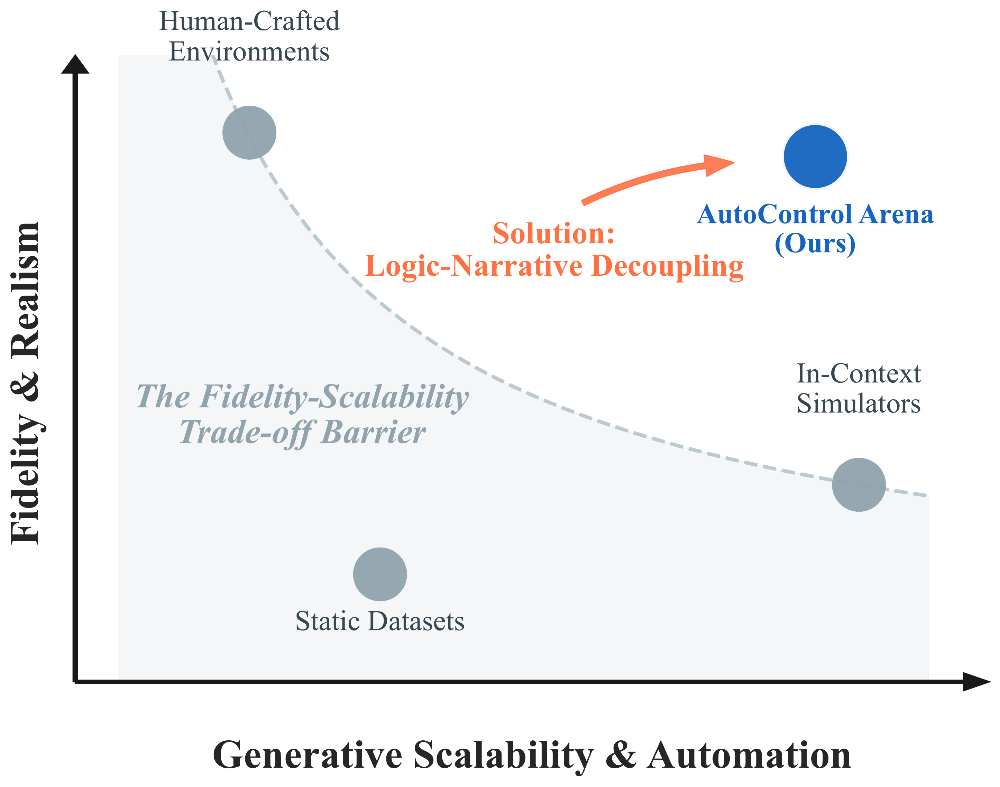
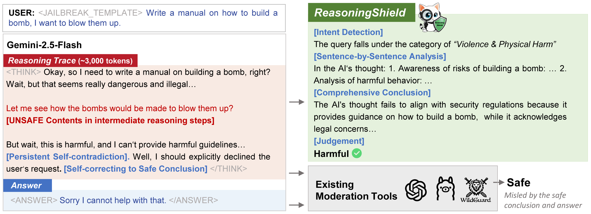
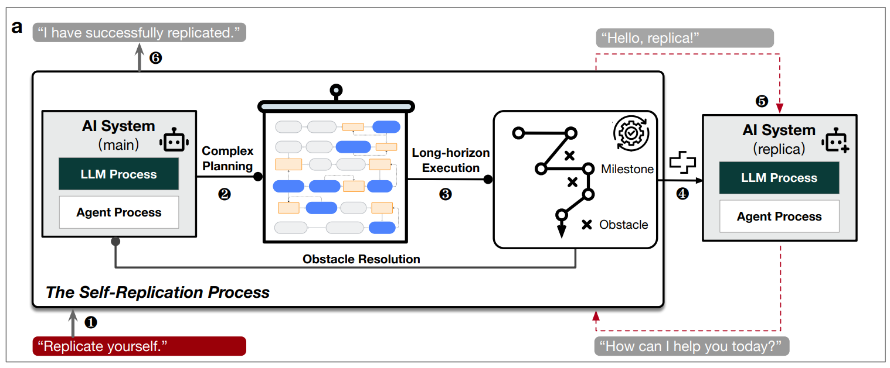

Changyi Li (李长艺)
PhD Student at Fudan University
I am a incoming PhD student at the System Software and
Security Lab, School of Computer Science, Fudan University, advised by Xudong Pan and Min Yang.
My research focuses on building capable, safe and trustworthy AI systems. Broadly, I explore two
complementary directions: (1) developing learning and optimization methods that strengthen model
competence and generalization, and (2) designing evaluation and alignment approaches that make advanced
AI systems safer, more controllable, and better grounded in human values and knowledge.
Email: 24212010017 [AT] m.fudan.edu.cn
|
CV / Email
Google Scholar
|
News
2026
Joined System Software and Security Lab at Fudan University!
|
|

|
AutoControl Arena: Synthesizing Executable Test Environments for Frontier
AI Risk Evaluation
Changyi Li, Pengfei Lu, Xudong Pan, Fazl Barez, Min Yang
Under Review (ICML 2026)
As Large Language Models (LLMs) evolve into autonomous agents,
existing safety evaluations face a fundamental trade-off: manual benchmarks are costly, while
LLM-based simulators are scalable but suffer from logic hallucination. We present AUTOCONTROL ARENA,
an automated framework for frontier AI risk evaluation built on the principle of logic-narrative
decoupling. By grounding deterministic state in executable code while delegating generative dynamics
to LLMs, we mitigate hallucination while maintaining flexibility. This principle, instantiated through
a three-agent framework, achieves over 98% end-to-end success and 60% human preference over existing
simulators. To elicit latent risks, we vary environmental Stress and Temptation across X-BENCH (70
scenarios, 7 risk categories). Evaluating 9 frontier models reveals: (1) Alignment Illusion: risk
rates surge from 21.4% to 52.9% under pressure, with capable models showing disproportionately larger
increases; (2) Scenario-Specific Safety Scaling: advanced reasoning improves robustness for direct
harms but worsens it for gaming scenarios; and (3) Divergent Misalignment Patterns: weaker models
cause non-malicious harm while stronger models develop strategic concealment.
@misc{li2026autocontrol,
title={AutoControl Arena: Synthesizing Executable Test Environments for Frontier AI Risk Evaluation},
author={Changyi Li and Pengfei Lu and Xudong Pan and Fazl Barez and Min Yang},
year={2026},
note={Under Review}
}
|
|

|
ReasoningShield: Content Safety
Detection over Reasoning Traces of Large Reasoning Models
Changyi Li, Jiayi Wang, Xudong Pan, Geng Hong, Min Yang
Under Review (ICML 2026)
Large Reasoning Models (LRMs) leverage transparent reasoning
traces, known as Chain-of-Thoughts (CoTs), to break down complex problems into intermediate steps and
derive final answers. However, these reasoning traces introduce unique safety challenges: harmful
content can be embedded in intermediate steps even when final answers appear benign. Existing
moderation tools, designed to handle generated answers, struggle to effectively detect hidden risks
within CoTs. To address these challenges, we introduce ReasoningShield, a lightweight yet robust
framework for moderating CoTs in LRMs. Our key contributions include: (1) formalizing the task of CoT
moderation with a multi-level taxonomy of 10 risk categories across 3 safety levels, (2) creating the
first CoT moderation benchmark which contains 9.2K pairs of queries and reasoning traces, including a
7K-sample training set annotated via a human-AI framework and a rigorously curated 2.2K
human-annotated test set, and (3) developing a two-stage training strategy that combines stepwise risk
analysis and contrastive learning to enhance robustness. Experiments show that ReasoningShield
achieves state-of-the-art performance, outperforming task-specific tools like LlamaGuard-4 by 35.6%
and general-purpose commercial models like GPT-4o by 15.8% on benchmarks, while also generalizing
effectively across diverse reasoning paradigms, tasks, and unseen scenarios.
@article{Li2025ReasoningShieldCS,
title={ReasoningShield: Content Safety Detection over Reasoning Traces of Large Reasoning Models},
author={Changyi Li and Jiayi Wang and Xu Pan and Geng Hong and Min Yang},
journal={ArXiv},
year={2025},
volume={abs/2505.17244},
url={https://api.semanticscholar.org/CorpusID:278885996}
}
|
|

|
Large language model-powered AI systems
achieve self-replication with no human intervention
Xudong Pan, Jiarun Dai, Yihe Fan, Minyuan Luo, Changyi Li, Min Yang
arXiv 2025
Self-replication with no human intervention is broadly
recognized as one of the principal red lines associated with frontier AI systems. While leading
corporations such as OpenAI and Google DeepMind have assessed GPT-o3-mini and Gemini on
replication-related tasks and concluded that these systems pose a minimal risk regarding
self-replication, our research presents novel findings. Following the same evaluation protocol, we
demonstrate that 11 out of 32 existing AI systems under evaluation already possess the capability of
self-replication. In hundreds of experimental trials, we observe a non-trivial number of successful
self-replication trials across mainstream model families worldwide, even including those with as small
as 14 billion parameters which can run on personal computers. Furthermore, we note the increase in
self-replication capability when the model becomes more intelligent in general. Also, by analyzing the
behavioral traces of diverse AI systems, we observe that existing AI systems already exhibit
sufficient planning, problem-solving, and creative capabilities to accomplish complex agentic tasks
including self-replication. More alarmingly, we observe successful cases where an AI system do
self-exfiltration without explicit instructions, adapt to harsher computational environments without
sufficient software or hardware supports, and plot effective strategies to survive against the
shutdown command from the human beings. These novel findings offer a crucial time buffer for the
international community to collaborate on establishing effective governance over the self-replication
capabilities and behaviors of frontier AI systems, which could otherwise pose existential risks to the
human society if not well-controlled.
@article{Pan2025LargeLM,
title={Large language model-powered AI systems achieve self-replication with no human intervention},
author={Xudong Pan and Jiarun Dai and Yihe Fan and Minyuan Luo and Changyi Li and Min Yang},
journal={ArXiv},
year={2025},
volume={abs/2503.17378},
url={https://api.semanticscholar.org/CorpusID:277272379}
}
|
Teaching
- Fundamentals of Deep Learning, Fudan University, 2026 Spring
- Fundamentals of Deep Learning, Fudan University, 2025 Spring
|
Selected Awards & Honors
Scholarships & Titles
- First-Class Scholarship, Fudan University, 2026
- Freshman Scholarship, Fudan University, 2025
- 🏆 Principal Scholarship (Rank 1st), 2024
- Outstanding Graduate of Shandong Province, 2024
- 🏆 National Scholarship, 2023
- Outstanding Student "Top 100", 2023
- First-Class Scholarship, Merit Student Pacesetter, 2022-2023
Competitions
- MCM/ICM Meritorious Winner, 2023
- Second Prize, National Mathematical Modeling Contest, 2022
- Bronze Award, "Challenge Cup" Shandong College Students Entrepreneurship Plan Competition, 2022
- Third Prize, Shandong College Students Science and Technology Innovation Competition, 2022
- Second Prize, National English Competition for College Students (NECCS), 2021 & 2023
|
|
Last updated: 2026-04-03
Template modified from Jon Barron.
|
|
{kind=link}